What happened in the Brazilian Elections?
The 2026 first round, and what to expect on Sunday
Swarthmore College – 2026
Short Recap of the Elections
Lula (PT) (Incumbent, Workers Party, running for a fourth term) vs Flávio Bolsonaro (PL) (senator for Rio de Janeiro, Liberal Party, son of the former right-wing President).
Jair Bolsonaro was convicted of leading a coup plot. In custody since Nov 2025; serving at home.
Flávio finished first, 47.0% to 45.2%. Runoff this next sunday
Gubernatorial Elections: 20, out of 27, elected in the first round.
Congress: Strong results in the House and Senate for Bolsonaro’s party (PL)
Presidential Results
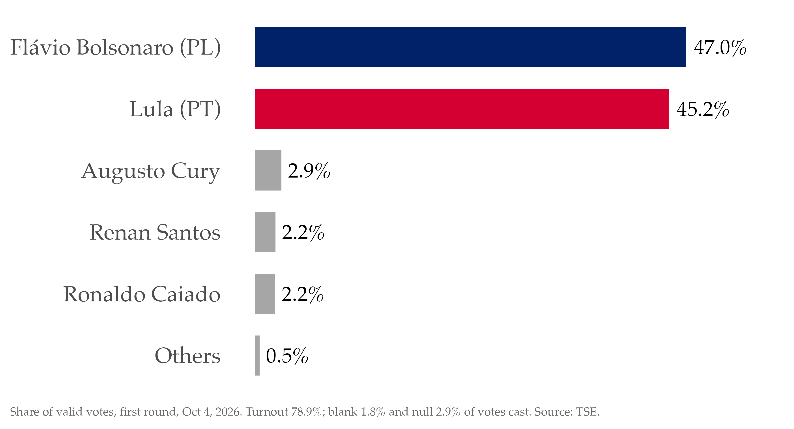
Takeaway: Flávio finished first, 47.0% to 45.2%. Runoff on Sunday.
Presidential Results
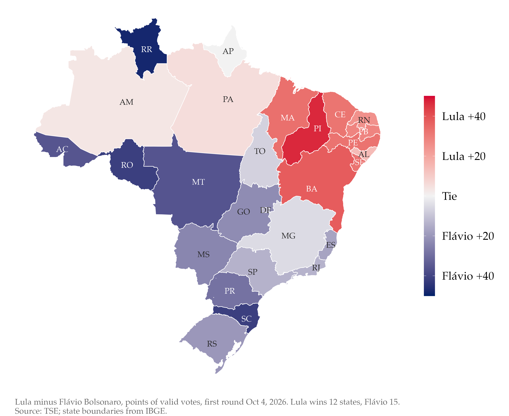
Polls during the threee months of campaign
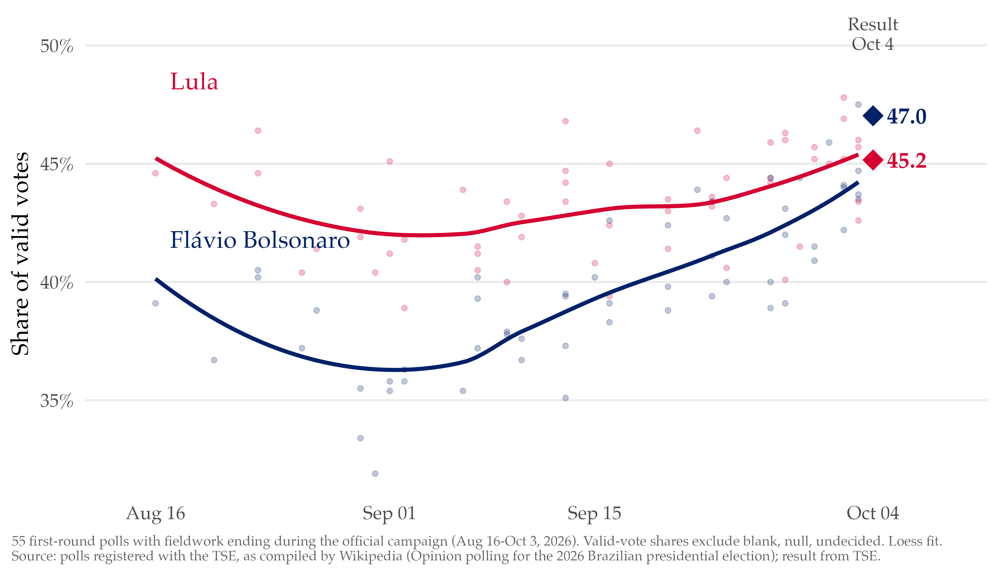
Takeaway: Polls had Lula ahead for the whole campaign. Flávio closed the gap in the final weeks.
Gubernatorial Elections
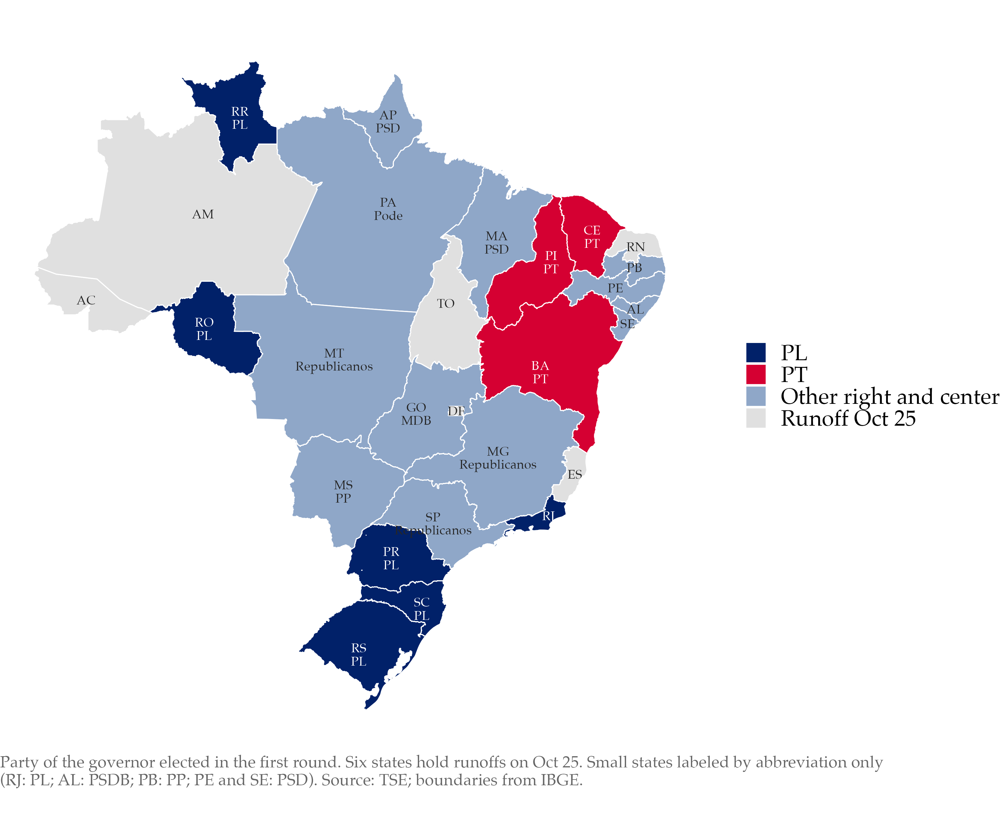
The PL won six governorships outright + aligned Governos in key states (SP and MG). The PT won three.
Senate
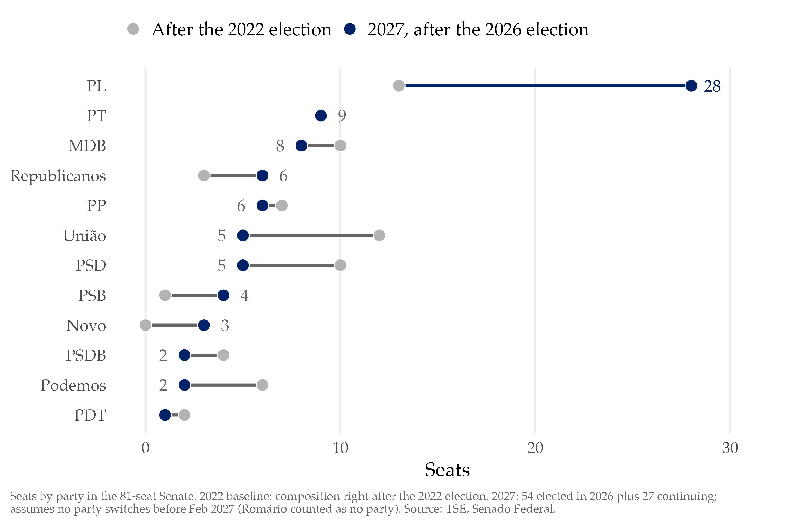
The PL more than doubled in the Senate: from 13 to 28 seats. The party won Both seats in DF,SC, RJ, MS and RO.
:::
House
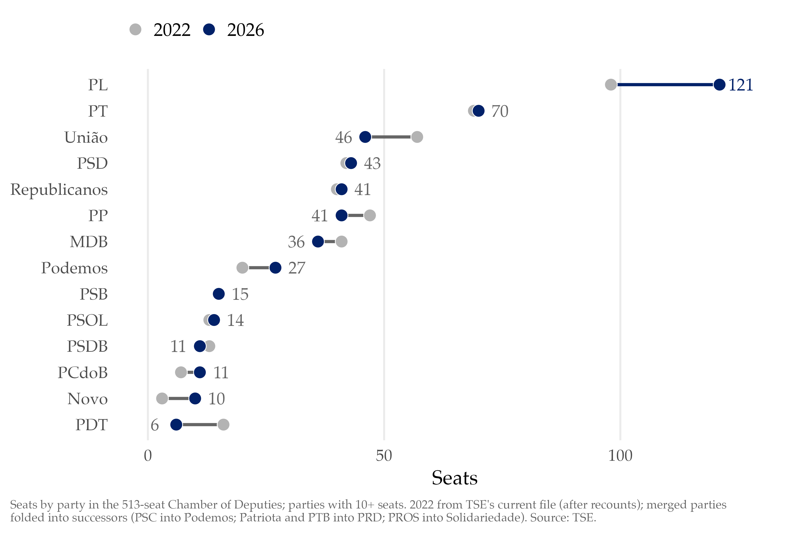
Takeaway I : The PL elected 121 deputies, the largest caucus in 40 years.
Takeaway II : PL grew considerably. PT remained basically the same. Center-right (UB, PP, and others) lost space.
The talk
This election can be understood with a mix of structural long-term processes in Brazilian and World politics. And some new and interesting patterns that need us to spend time understandin further
What is old?
Electoral stability
An anti-incumbent effects
The economy matters less than it used to
What is new?
A right-wing turn in South America + Trump’s politics in the continent
The consolidation of a right-wing partisan identity in Brazil
New issues in the digital space: platforms without a social graph.
A fairly simple story: municipalities voted in 2026 almost exactly as in 2022.
Election Stability
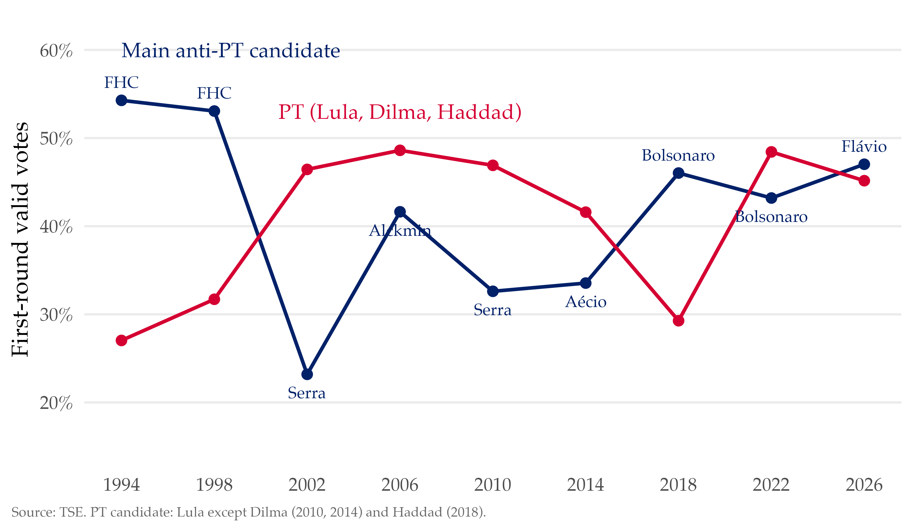
Takeaway: Three decades of PT versus anti-PT, and the anti-PT side is back on top.
Slightly higher abstention. But nothing unusual
Cesar Zucco (Michigan, Oct 2026). Jairo Nicolau, Política & Dados , Oct 8, 2026.
Some specific groups turnout more than others
Among those required to vote, the biggest group of abstainers is 18-29: 7.7M (4.3M men, 3.5M women). Abstention falls with age until 69, then jumps at 70+, when voting stops being mandatory. Among those not required to vote, low-education older women stand out: 2.5M illiterate or barely literate women 70+ stayed home, a 76% abstention rate. Nicolau’s point for the runoff: young women and older women are Lula’s most efficient mobilization targets.
Figures: Jairo Nicolau, “Quatro tópicos sobre a abstenção”, Política & Dados , Oct 8, 2026. Number of abstainers, first round of 2022; 2026 breakdowns are not yet published.
An ordinary result: presidential popularity predicts the vote.
Popularity of the last three elected Presidents
Anti-incumbency Wave
Takeaway: Incumbents lost vote share in 21 of 29 elections since 2024.
Anti-incumbency Wave in Latin America
Brazil is part of a broader, hemispheric pattern:
Argentina (Oct 2025): the midterms left Javier Milei, the right-wing president, in a stronger positionBolivia (Oct 2025): voters ended almost 20 years of MAS rule and elected Rodrigo PazHonduras (Nov 2025): Hondurans voted out the governing Libre party and elected a conservative, Nasry AsfuraChile (Dec 2025): the conservative José Antonio Kast won the presidencyPeru (Jun 2026): Keiko Fujimori, daughter of a former president convicted of serious human-rights abuses, won a runoffColombia (Jun 2026): the right-wing Abelardo de la Espriella narrowly beat Iván Cepeda, ending Colombia’s first left-wing government
The Economy and the Elections
Good Economic Times (GET) (Campello and Zucco 2016, 2020)
An index of the world economy as it hits Brazil: commodity prices and international interest rates
High commodity prices and low international rates mean good times
Neither is under the president’s control
The long-term story:
International conditions (GET) predict the economy
The economy predicts presidential popularity
Popularity predicts elections
Campello and Zucco, “Presidential Success and the World Economy”, Journal of Politics 78(2), 2016; The Volatility Curse , Cambridge University Press, 2020.
Better economic conditions increase President’s popularity
A permanent one-SD rise in GET adds about 15 points of popularity within a year and 25 to 29 points in the long run, roughly twice the effect of a one-SD fall in the discomfort index (unemployment plus 1.7 times 12-month inflation). Shaded areas are 90% simulation bands; the two lines are models estimated from 1995 and from 1998.
Lula III vs. Model Prediction for popularity
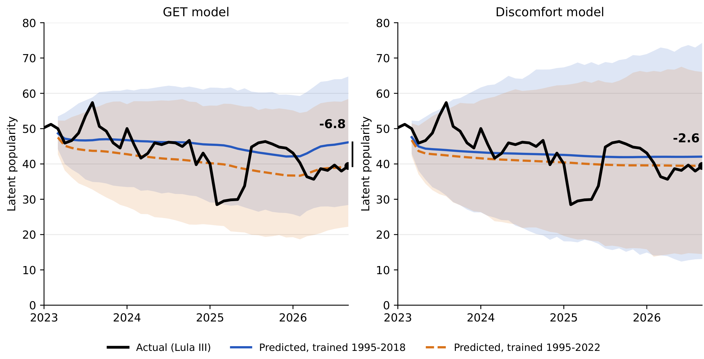
Takeaway: Under the old rules, this economy would have carried Lula.
Black line: Lula III’s actual popularity. Blue and orange: what a typical president would have had given the same economy, from models trained on 1995-2018 and 1995-2022. Lula ends 6.8 points below the GET model and 2.6 below the discomfort model.
The 2016-2020 structural break
Political meltdown in Brazil
Long-term effects of the Pandemic,
Russian war
Increased polarization (everywhere?)
Social media
Right-wing Turn in South America
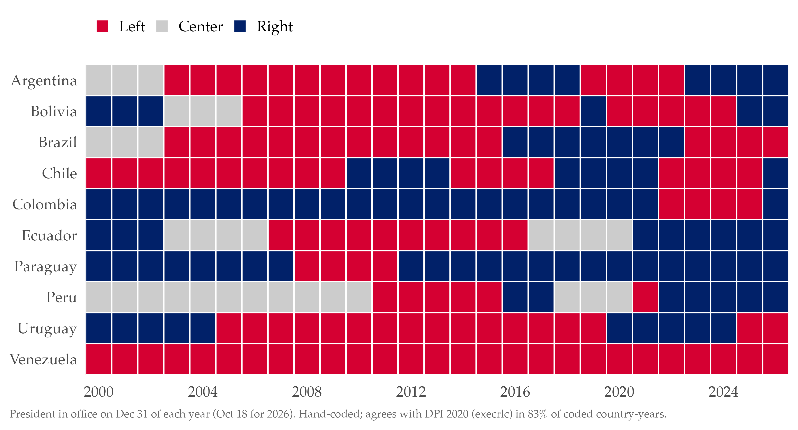
Takeaway: The pink tide is gone: three of ten South American presidents are on the left.
Peak of 8 left presidents (2008-14). Left in 2026: Brazil, Uruguay, Venezuela (Delcy Rodríguez, acting, after the US captured Maduro on Jan 3, 2026).
Right-wing Turn in South America
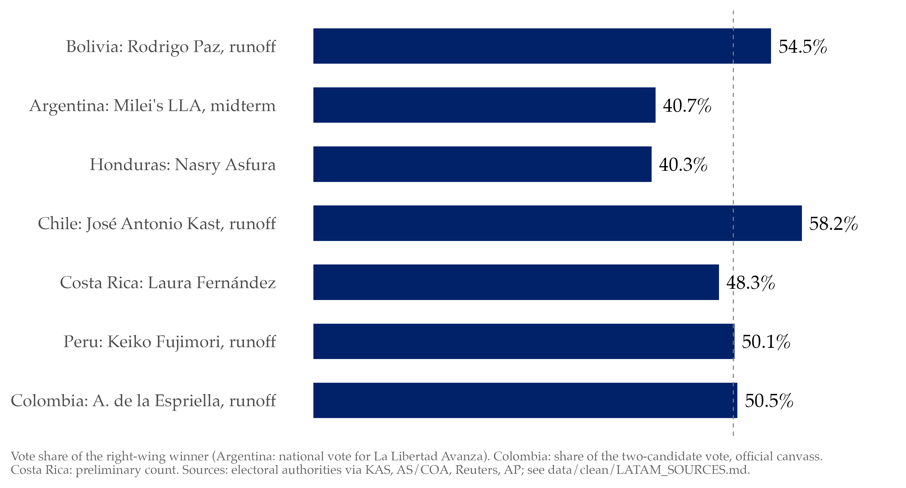
Takeaway: Since October 2025 the right has won seven straight contests.
Security decided most of these races. Cost of living mattered in Argentina and Bolivia. Trump endorsed Asfura, Milei and De la Espriella. Colombia: ends the country’s first left-wing government. Chile: Kast, often described as far-right. Peru: Fujimori by 49,641 votes.
Right-wing Turn in South America
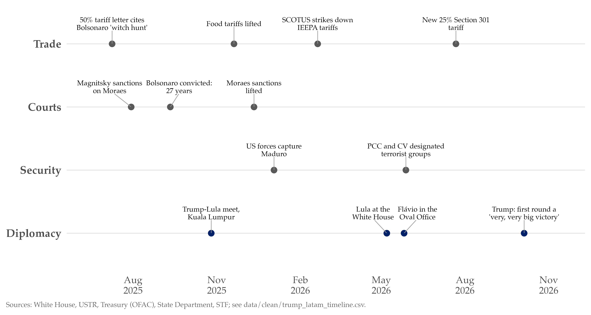
Takeaway: Trump has been a player in Brazilian politics since July 2025.
The July 2025 tariff letter tied 50% tariffs to the Bolsonaro trial. The Supreme Court struck down the IEEPA tariffs in Feb 2026; a 25% Section 301 tariff took effect in July 2026. Flávio met Trump in the Oval Office in May with no endorsement. On Oct 5 Trump called the first round “a very, very big victory.”
Right-wing Turn in South America
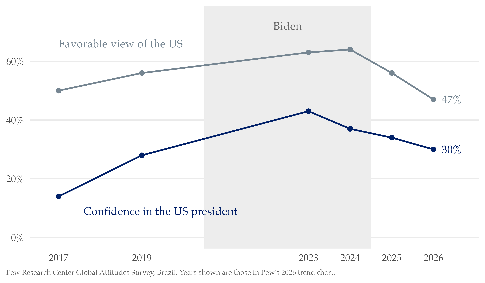
Takeaway: Brazilians cooled on the US under Trump II.
Latinobarómetro 2026 (press-reported): 30% of Brazilians approve of Trump’s international handling, 61% disapprove.
Right-wing Identity in Brazil
Takeaway: For the first time, a right-wing party has mass partisans.
Right-wing Identity in Brazil
Right-wing Identity in Brazil
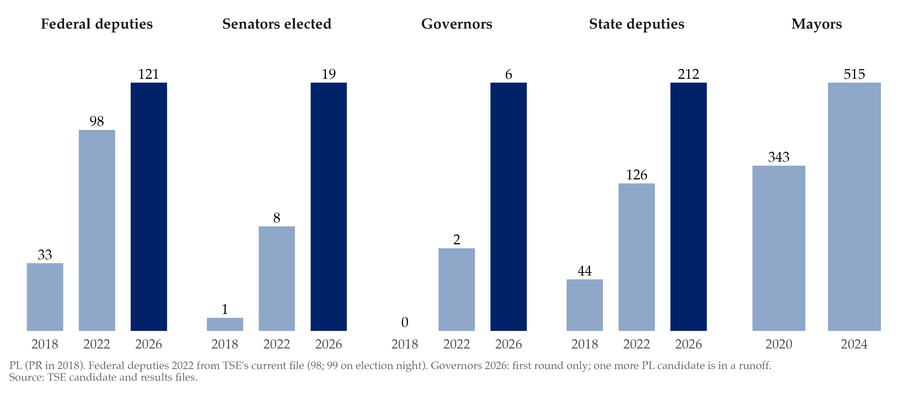
Right-wing Identity in Brazil
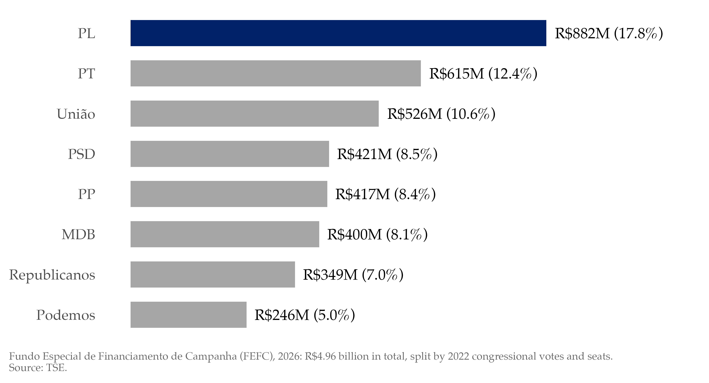
Takeaway: And it is now the richest party in Brazil.
Not the biggest by members: MDB 2.02M, PT 1.67M, PL 955k (8th). PL also gets the largest share of the Fundo Partidário (16.1% in 2025).
What Will Happen Next Sunday?
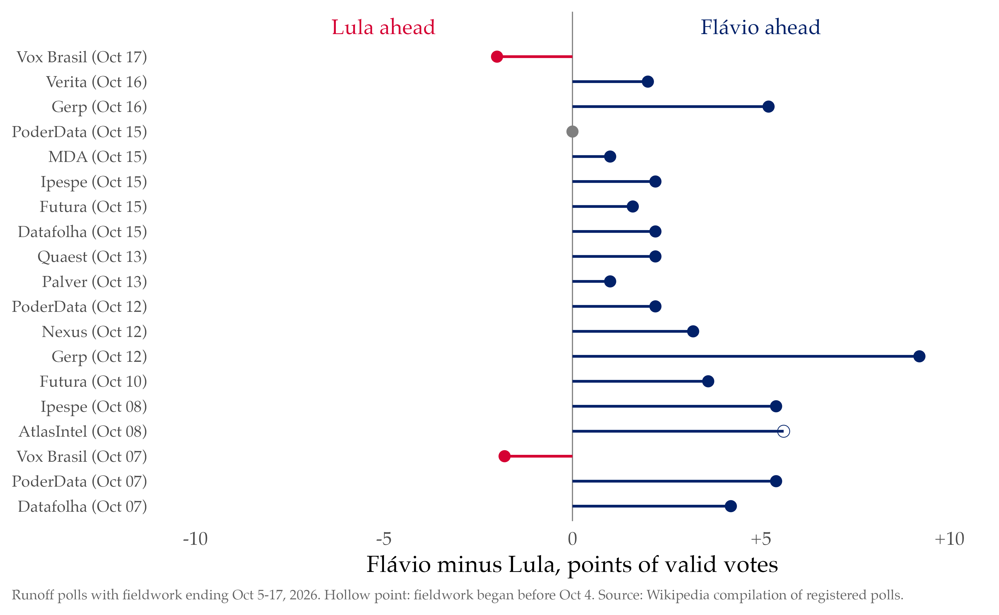
Takeaway: Flávio leads 16 of 19 runoff polls.
Average Flávio margin: 2.8 points of valid votes. The two Lula leads are both Vox Brasil. Since 1989 no second-place finisher in a first round has won the runoff.
What Will Happen Next Sunday?
If Flávio wins
Close alignment with Trump, and more US security presence in the region
A right-wing agenda that runs almost unconstrained in Congress
Open conflict with the Supreme Court, where three justices hit mandatory retirement before 2031
If Lula wins
A minority government facing a PL that holds the largest caucus in both chambers
A fight for survival from day one
Takeaway: Two very different Brazils.
Mandatory retirement at 75: Fux (Apr 2028), Cármen Lúcia (Apr 2029), Gilmar Mendes (Dec 2030).
Cesar Zucco (Michigan, Oct 2026): “If elected, Lula will probably not finish his term. If elected, right-wing agenda will be mostly unconstrained.”
Brazil voted much as it did in 2022. What changed is the right: it now has a party, partisans, and a patron in Washington.
Tiago Ventura · tv186@georgetown.edu